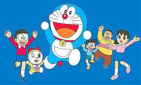

|  |
This article is about the media franchise. For the title character, see Doraemon (character). For other uses, Doraemon(isambiguation). ee also: List of Doraemon characters Doraemon, a cat robot from the 22nd century, was sent by Sewashi Nobi to help Nobita Nobi, a young boy who scores poor grades and is frequently bullied by his two classmates, so that his descendants can improve their lives. Doraemon has a four-dimensional pouch in which he stores unexpected gadgets that improve his life. He has many gadgets, which he gets from The Future Department Store, such as Bamboo-Copter, a small piece of headgear that can allow you to fly; Anywhere Door, a pink-colored door that allows people to travel according to the thoughts of the person who turns the knob; Time Kerchief, a handkerchief that can turn an object new or old or a person young or old; Translator Tool, a cuboid jelly that can allow people to converse in any language across the universe; Designer Camera, a camera that produces dresses; and many more. Nobita's closest friend is Shizuka Minamoto, who eventually becomes his wife in the future and has a child with him named Nobisuke Nobi (the same name as Nobita's father). Nobita is often bullied by Takeshi Goda (nicknamed "Gian"), and Suneo Honekawa, but they are shown to be friends in some of the episodes. In most episodes, a typical story consists of Nobita taking a gadget from Doraemon for his needs eventually causing more trouble than he was trying to solve. As for the movies, Doraemon, Nobita, Shizuka, Suneo, and Gian (and sometimes Dekisugi) are often shown ready for an adventure to protect people. They are adventurous, humorous, and emotional. Manga See also: List of Doraemon chapters and List of Doraemon Plus chapters The first appearance of Doraemon, who came via the time machine. In December 1969 the Doraemon manga appeared in six different children's monthly magazines published by Shogakukan. The magazines were aimed at children from nursery school to fourth grade. In 1977 CoroCoro Comic was launched as the flagship magazine of Doraemon.[5] Since the debut of Doraemon in 1969, the stories have been selectively collected into forty-five tankōbon volumes, which were published under Shogakukan's Tentōmushi Comics imprint, from 1974 to 1996. Shogakukan published a master works collection consisting of Twenty volumes between July 24, 2009 and September 25, 2012.[6][7] In addition, Doraemon has appeared in a variety of manga series by Shōgakukan. In 2005 Shōgakukan published a series of five more manga volumes under the title Doraemon+ (Doraemon Plus), which were not found in the forty-five original volumes. On December 1, 2014, a sixth volume of Doraemon Plus was published. This was the first volume in eight years.[8] There have been two series of bilingual, Japanese and English, volumes of the manga by SHOGAKUKAN ENGLISH COMICS under the title Doraemon: Gadget Cat from the Future, and two audio versions.[9][10] The first series has ten volumes and the second six.[9] In addition, 21st Century Publishing House (二十一世纪出版社集团) released bilingual English-Chinese versions in Mainland China.[11] In July 2013, Fujiko Fujio Productions announced that they would be collaborating with ebook publisher Voyager Japan and localization company AltJapan Co., Ltd. to release an English language version of the manga in full-color digitally via the Amazon Kindle platform in North America.[12] Shogakukan released the first volume in November 2013.[13] This English version incorporates a variety of changes to character names; Nobita is "Noby", Shizuka is "Sue", Suneo is "Sneech", and Gian is "Big G", while dorayaki is "Yummy Bun/Fudgy Pudgy Pie."[14] A total of 200 volumes have been released. The manga has been published in English in print by Shogakukan Asia, using the same translation as the manga available on Amazon Kindle. Unlike the Amazon Kindle releases these volumes are in black and white instead of color. They have released four volumes.[15] Shogakukan started digital distribution of all forty-five original volumes throughout Japan from July 16, 2015.[16] anime)|Doraemon (1979 anime)|Doraemon (2005 anime)}} After a brief animated series in 1973 by Nippon Television, Doraemon remained fairly exclusive in manga form until 1979 when a newly formed animation studio, Shin-Ei Animation (now owned by TV Asahi) produced an anime series of Doraemon.[17] This series became incredibly popular, and ended with 1,787 episodes on March 25, 2005. In Asia, this version is sometimes referred to as the Ōyama Edition, after the voice actress who voiced Doraemon in this series.[18] There have been two series of bilingual, Japanese and English, volumes of the manga by SHOGAKUKAN ENGLISH COMICS under the title Doraemon: Gadget Cat from the Future, and two audio versions.[9][10] The first series has ten volumes and the second six.[9] In addition, 21st Century Publishing House (二十一世纪出版社集团) released bilingual English-Chinese versions in Mainland China.[11] In July 2013, Fujiko Fujio Productions announced that they would be collaborating with ebook publisher Voyager Japan and localization company AltJapan Co., Ltd. to release an English language version of the manga in full-color digitally via the Amazon Kindle platform in North America.[12] Shogakukan released the first volume in November 2013.[13] This English version incorporates a variety of changes to character names; Nobita is "Noby", Shizuka is "Sue", Suneo is "Sneech", and Gian is "Big G", while dorayaki is "Yummy Bun/Fudgy Pudgy Pie."[14] A total of 200 volumes have been released. The manga has been published in English in print by Shogakukan Asia, using the same translation as the manga available on Amazon Kindle. Unlike the Amazon Kindle releases these volumes are in black and white instead of color. They have released four volumes.[15] Shogakukan started digital distribution of all forty-five original volumes throughout Japan from July 16, 2015.[16] anime)|Doraemon (1979 anime)|Doraemon (2005 anime)}} After a brief animated series in 1973 by Nippon Television, Doraemon remained fairly exclusive in manga form until 1979 when a newly formed animation studio, Shin-Ei Animation (now owned by TV Asahi) produced an anime series of Doraemon.[17] This series became incredibly popular, and ended with 1,787 episodes on March 25, 2005. In Asia, this version is sometimes referred to as the Ōyama Edition, after the voice actress who voiced Doraemon in this series.[18] |
Wikipe-tan face.svg Anime and Manga portal Doraemon (Japanese: ドラえもん Japanese pronunciation: [do̞ɾa̠e̞mõ̞ɴ]) is a Japanese manga series written and illustrated by Fujiko F. Fujio, the pen name of the duo Hiroshi Fujimoto and Motoo Abiko. The series has also been adapted into a successful anime series and media franchise. The story revolves around a robotic cat named Doraemon, who travels back in time from the 22nd century to aid a boy named Nobita Nobi (野比のび太 Nobi Nobita). |
|
Doraemon, a cat robot from the 22nd century, was sent by Sewashi Nobi to help Nobita Nobi, a young boy who scores poor grades and is frequently bullied by his two classmates, so that his descendants can improve their lives. Doraemon has a four-dimensional pouch in which he stores unexpected gadgets that improve his life. He has many gadgets, which he gets from The Future Department Store, such as Bamboo-Copter, a small piece of headgear that can allow you to fly; Anywhere Door, a pink-colored door that allows people to travel according to the thoughts of the person who turns the knob; Time Kerchief, a handkerchief that can turn an object new or old or a person young or old; Translator Tool, a cuboid jelly that can allow people to converse in any language across the universe; Designer Camera, a camera that produces dresses; and many more. |
|
In July 2013, Fujiko Fujio Productions announced that they would be collaborating with ebook publisher Voyager Japan and localization company AltJapan Co., Ltd. to release an English language version of the manga in full-color digitally via the Amazon Kindle platform in North America.[12] Shogakukan released the first volume in November 2013.[13] This English version incorporates a variety of changes to character names; Nobita is "Noby", Shizuka is "Sue", Suneo is "Sneech", and Gian is "Big G", while dorayaki is "Yummy Bun/Fudgy Pudgy Pie."[14] A total of 200 volumes have been released. |
| Name: | |
| Email: | |
| Phone number: | |
| Message: | |